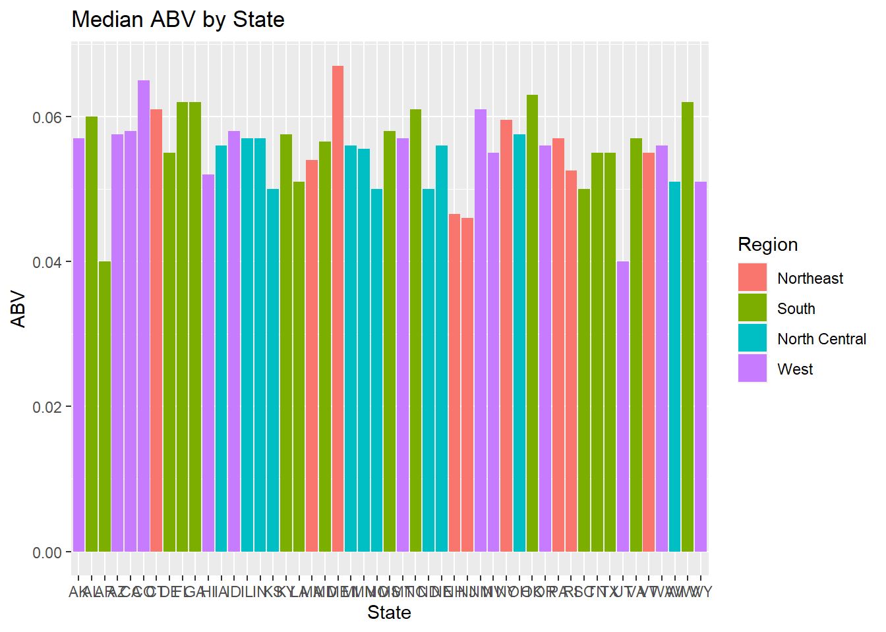
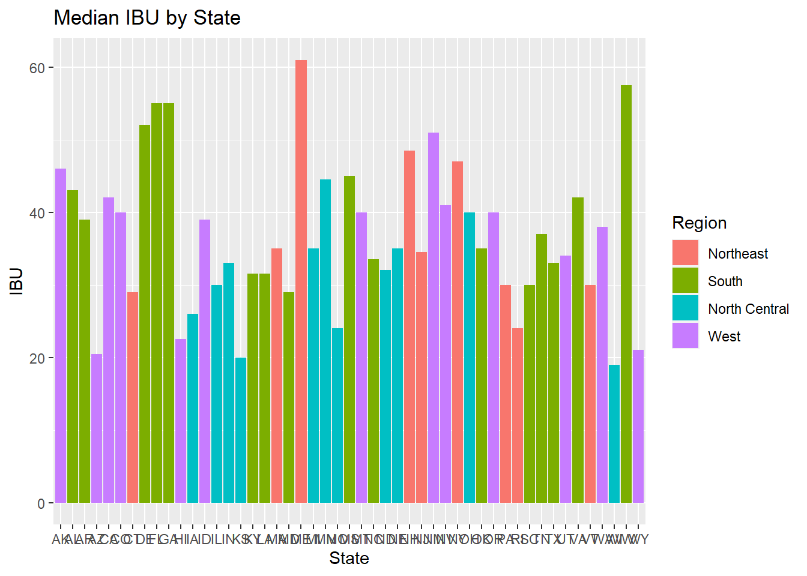
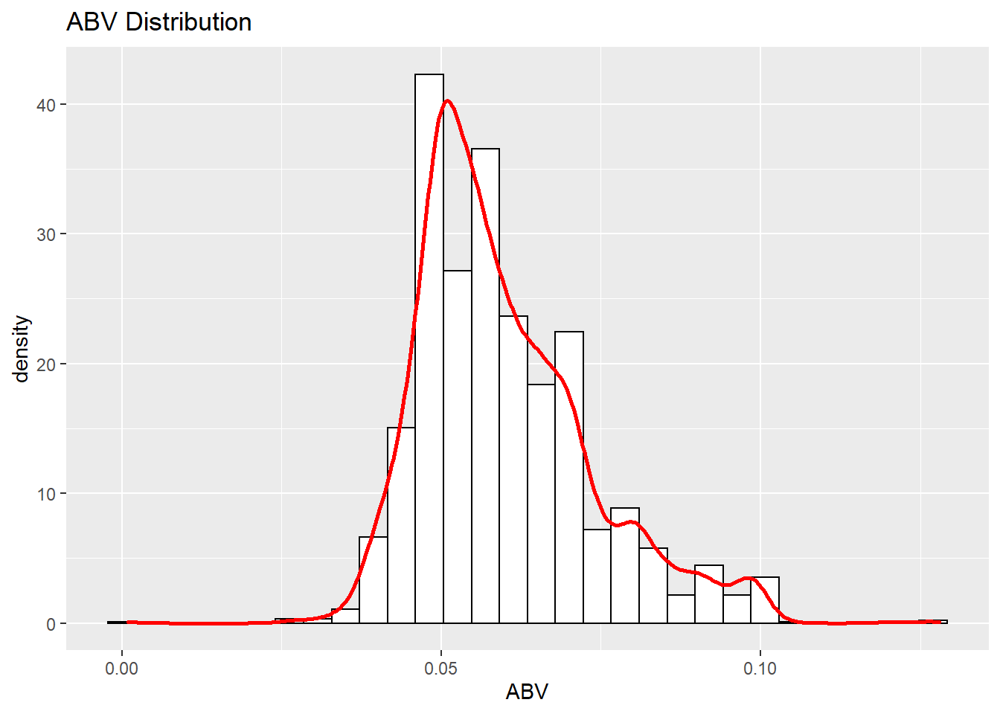
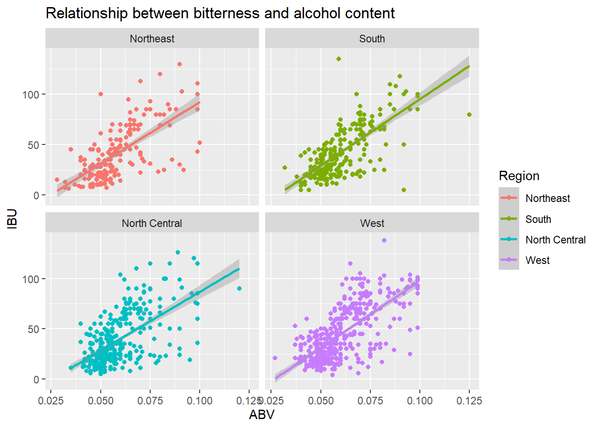
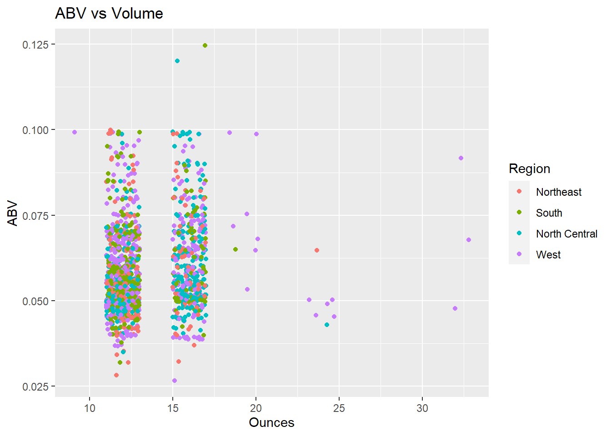
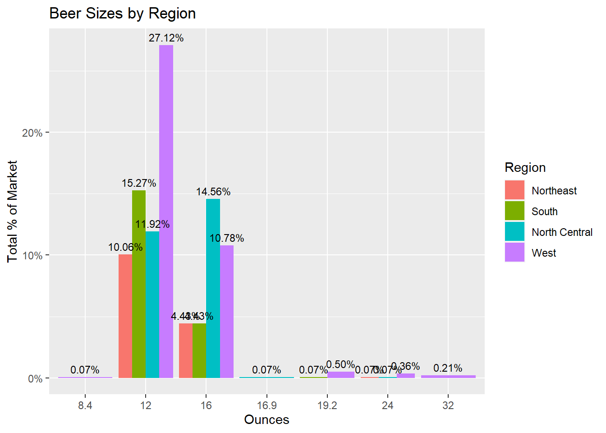
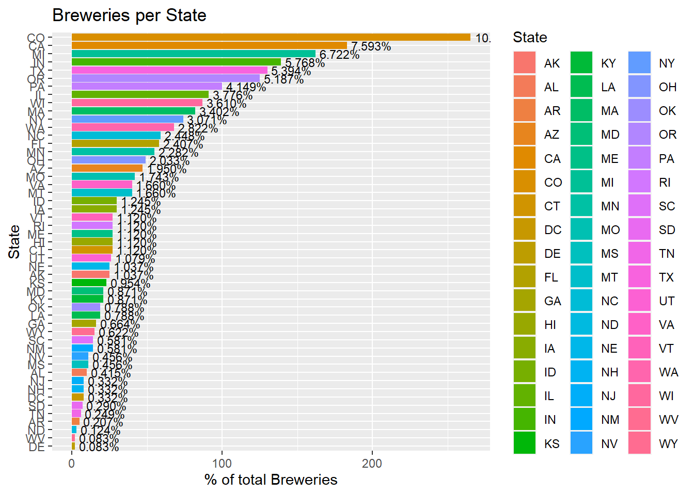
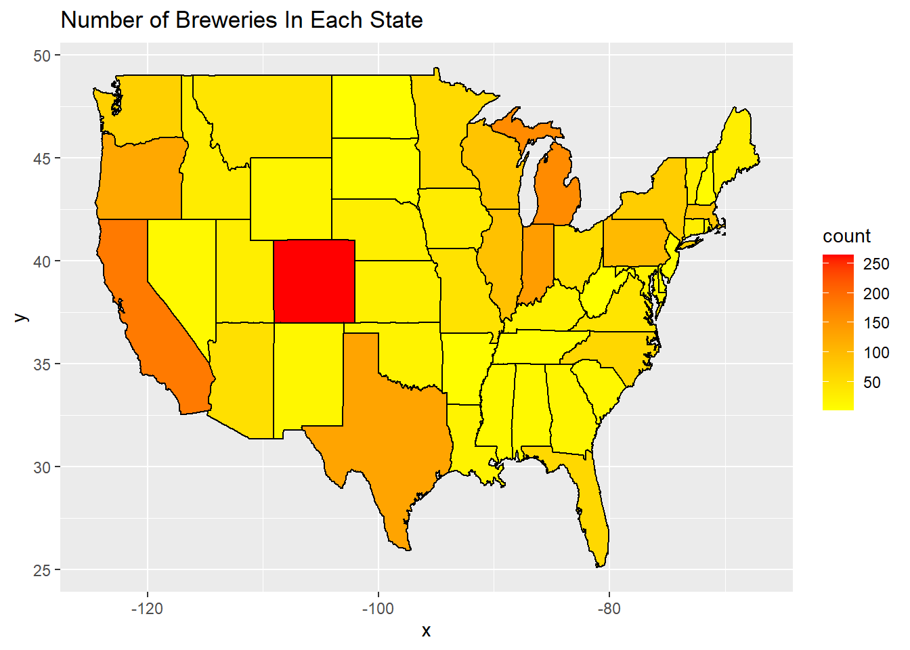
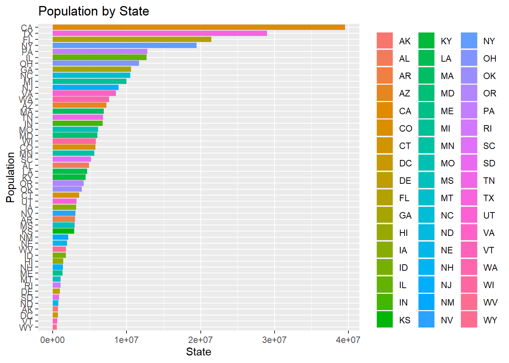
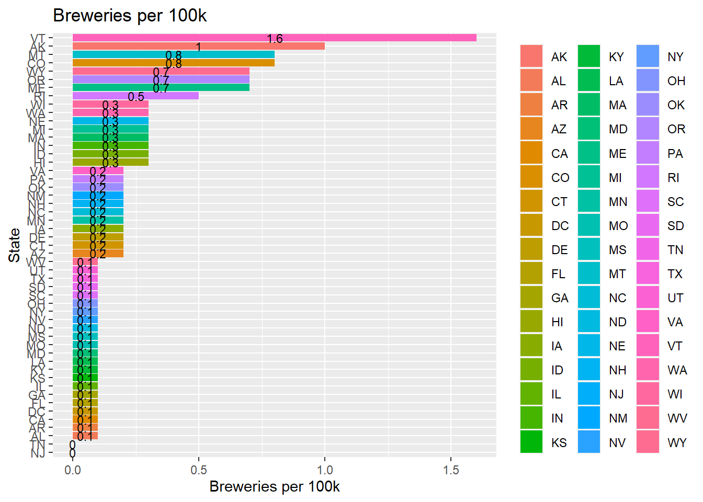

{kind=link}
Fidel DDS Case Study 1
Fidel
6/16/2021
intro Good afternoon, Mr. Doukeris and Mr. Tennenbaum. I have completed the exploratory data analysis on the data sets you provided and have some findings that can help with making business decisions. BLUF is even though the market may seem saturated at first glance,on a per capita basis, only 2 stats have 1 or more breweries per 100,000 citizens. CO, CA and MI have 24.88% of the total breweries with their borders. The low brewery per 100,000 citizens and further investigation of states with many different beer styles suggests most states are dominated by a few multi-style breweries. The data provided also suggests for most states there is a positive correlation for IBUs as ABV increases, showing a trend moving towards bigger bodied beers. This will mean costs to produce beers will go up as hops and fermentable sugar generation can only increase with increased amounts for the same amount of beer volume. A plus is that a breakdown of serving sizes show that 12oz is the most popular size, which is smaller than the standard 16oz pint glass. This suggests more there are more can sales vs onsight consumption which could help mitigate increased production costs.IPAs are some of the most costly beers to produce and are the most popular, second being other ales. With the data provided we have created a model that is 87% in classifying if beers are IPAs vs ales using IBU and ABV data. Our recommendation is to establish a presence in a higher population growth state (4%+), such as NV or ID or a large state that has moderate growth (2%+ with 20mil+ pop) like Texas or Florida. Next to consider competition, our analysis shows its not the number of breweries but the number of styles that a brewery produces to be the biggest threat. We recommend a similar strategy but starting with the most popular styles and to can the beers.This is more of a volume and velocity play and also enables you to operate across states borders, making location less critical to success.
Code Chunk 1 Below we are loading the necessary packages and importing CSV files containing the data sets used to conduct the EDA. The datasets used are beer.CSV, Breweries.CSV and USPop2019OnlyStates3yrGrowth (additional dataset on state populations for 2019 and 3 year growth rate). The X2019Pop column of USPop2019OnlyStates3yrGrowth had the commas removed and classes changed to numeric.
library(knitr)
library(ggplot2)
library(tidyverse)
library(dplyr)
library(maps)
library(stringr)
library(e1071)
library(class)
library(caret)
library(mapdata)
#importing CVS Files
beers = read.csv(file.choose(),header = TRUE)
breweries = read.csv(file.choose(),header = TRUE)
USPop2019OnlyStates3yrGrowth = read.csv(file.choose(),header= TRUE)
USPop2019OnlyStates3yrGrowth$X2019pop <- as.numeric((gsub(",","",USPop2019OnlyStates3yrGrowth$X2019pop)))Code Chunk 2: The following code is used answer question 1: “How many breweries are present in each state?”. The data is graphed on a bar chart and provided in a table. This allows us to verify the data visually with what is in the dataset. We also tidy up our statecount dataframe by removing white space in the $State column with the trimws function.
breweries %>% ggplot(aes(y=reorder(State, State, length), fill = State)) + geom_bar() + ggtitle("Breweries per State") + labs(y="States", x="Number of Breweries")
#verify that chart matches the data
table(breweries$State)##
## AK AL AR AZ CA CO CT DC DE FL GA HI IA ID IL IN KS KY LA MA MD ME MI MN MO MS
## 7 3 2 11 39 47 8 1 2 15 7 4 5 5 18 22 3 4 5 23 7 9 32 12 9 2
## MT NC ND NE NH NJ NM NV NY OH OK OR PA RI SC SD TN TX UT VA VT WA WI WV WY
## 9 19 1 5 3 3 4 2 16 15 6 29 25 5 4 1 3 28 4 16 10 23 20 1 4#tallying up breweries and finding the average of each state
statecount<- breweries %>% group_by(State) %>% tally
statecount$State <- trimws(statecount$State, which = c("left"))
summary(statecount$n) #10.9 breweries per state## Min. 1st Qu. Median Mean 3rd Qu. Max.
## 1.00 3.50 7.00 10.94 16.00 47.00#Code Chunk 3: We now will merge the beer and breweries CSV files to better analyze the data. We will join the 2 datasets with the “Brew_ID” in the brewery.CSV and “brewery_ID” in the beer.CSV. Before we can merge them we will have to rename the “Brew_ID” to “brewery_ID” in the brewery.CSV in order to use it as a key column to merge the two datasets. After merging the data set we tidy the State colum of the completebrewerylist dataframe by removing whitespace with trimws.This answers the first part to question #2. We also create a stateinfo dataframe and rename the columns to match our completebrewerylist dataframe and merge it with the completebrewerylist to create a new dataframe, completebrewerylist1.
#changing columns with the shared data I need with names names to match in each data frame
colnames(breweries)[colnames(breweries)=="Brew_ID"] <- "Brewery_id"
completebrewerylist <- merge(beers, breweries, by = "Brewery_id")
#stripping left space
completebrewerylist$State <- trimws(completebrewerylist$State, which = c("left"))
#adding additional columns to add fidelity to locality analysis
stateinfo = data.frame(state.abb, tolower(state.name), state.region, state.division)
#updating column names to prep for merging
names(stateinfo)[1] = "State"
names(stateinfo)[2] = "State_Name"
names(stateinfo)[3] = "Region"
names(stateinfo)[4] = "Division"
#combining with completebrewerylist
completebrewerylist1 = merge(completebrewerylist, stateinfo, by= "State", all.x=TRUE)#Code Chunk 4: Before answering the last portion of question 2, We use the head() and tail() functions to call the first and last 6 entries of the dataframe. This satisfies the last portion of question #2. At this step we also merge the data from the USPop2019OnlyStates3yrGrowth.CSV with the new dataframe (completebrewerylist1) by the “state” column to create a new dataframe; completebrewerylist2.
headlist <- completebrewerylist1 %>% head()
headlist## State Brewery_id Name.x Beer_ID ABV IBU Style Ounces
## 1 AK 494 Polar Pale Ale 920 0.052 17 American Pale Ale (APA) 12
## 2 AK 103 King Street IPA 1667 0.060 70 American IPA 12
## 3 AK 454 Single Engine Red 929 0.058 46 Irish Red Ale 12
## 4 AK 459 Skilak Scottish Ale (2011) 348 0.058 NA Scottish Ale 12
## 5 AK 103 King Street Pilsner 1706 0.055 NA Czech Pilsener 12
## 6 AK 224 Pleasure Town IPA 1814 0.063 61 American IPA 12
## Name.y City State_Name Region Division
## 1 Broken Tooth Brewing Company Anchorage alaska West Pacific
## 2 King Street Brewing Company Anchorage alaska West Pacific
## 3 Denali Brewing Company Talkeetna alaska West Pacific
## 4 Kenai River Brewing Company Soldotna alaska West Pacific
## 5 King Street Brewing Company Anchorage alaska West Pacific
## 6 Midnight Sun Brewing Company Anchorage alaska West Pacifictaillist <- completebrewerylist1 %>% tail()
taillist## State Brewery_id Name.x Beer_ID ABV IBU Style Ounces
## 2405 WY 458 Indian Paintbrush IPA 1199 0.070 75 American IPA 12
## 2406 WY 192 Pakoâ\200\231s EyePA 393 0.068 60 American IPA 12
## 2407 WY 80 Bomber Mountain Amber Ale 2484 0.046 20 American Amber / Red Ale 12
## 2408 WY 458 Wagon Box Wheat Beer 1197 0.059 15 American Pale Wheat Ale 12
## 2409 WY 458 Bomber Mountain Amber Ale (2013) 1200 0.046 20 American Amber / Red Ale 12
## 2410 WY 192 Monarch Pilsner 2234 0.050 NA American Pilsner 12
## Name.y City State_Name Region Division
## 2405 The Black Tooth Brewing Company Sheridan wyoming West Mountain
## 2406 Snake River Brewing Company Jackson wyoming West Mountain
## 2407 Black Tooth Brewing Company Sheridan wyoming West Mountain
## 2408 The Black Tooth Brewing Company Sheridan wyoming West Mountain
## 2409 The Black Tooth Brewing Company Sheridan wyoming West Mountain
## 2410 Snake River Brewing Company Jackson wyoming West Mountain#adding state population and 3 yr growth
completebrewerylist2 = merge(completebrewerylist1, USPop2019OnlyStates3yrGrowth, by="State", all=TRUE)#Code Chunk 5: After completing the new data frame by merging all the necessary datasets, we check for missing data and address them for question #3. We search for missing entries in the completebrewerylist2 dataframe using colSum(is.na). In our Analysis we decided to omit any entry that does not have all columns filled. We choose this strategy becuase there were too many missing entries to manually fill and using a value like average IBU or ABV will affect our later analysis when using a Knn predictive model to classify beers based on IBU and ABV. We felt that using the values provided by breweries was a better representation of each style becuase not only are beer styles dicated by beer guidelines, they are also help breweries differentiate their product from other breweries; using an average may have an impact when determing customer preferences.This answers question
#3 Address the missing values in each column.
#Checking for missing values
colSums(is.na(completebrewerylist2))## State Brewery_id Name.x Beer_ID ABV IBU Style Ounces Name.y
## 0 0 0 0 62 1005 0 0 0
## City State_Name Region Division X2019pop X3YrGrowth
## 0 8 8 8 0 0# option 1 omitting NA
#na.omit() used
#option 2 replacing NA values to average of IBU
#average IBU for IPA Is: 71.82 (See question 8)
#average IBU for Ale is: 34.59 (See question 8)#Code Chunk 6: Question 4 asks to compute the median ABV and IBU for each state and to plot a bar charter to compare. We complete this by plotting ussing ggplot package. It is here where we use the na.omit() function to remove entries with missing data. We run a summary for the ABV and IBU in the data frame to verify our visual chart to the data.
#4 Compute the median alcohol content and international bitterness unit for each state.
# Plot a bar chart to compare.
#switch to region vs division, chart was too busy with 9 colors
completebrewerylist2 %>%
na.omit() %>%
ggplot(aes(x = State, y = ABV, fill= Region)) +
geom_bar(stat="summary", fun="median") +
ggtitle("Median ABV by State") +
labs(x="State",y="ABV")
#Numeric details
summary(completebrewerylist2$ABV) #Overall ABV Median is .056## Min. 1st Qu. Median Mean 3rd Qu. Max. NA's
## 0.00100 0.05000 0.05600 0.05977 0.06700 0.12800 62completebrewerylist2 %>%
na.omit() %>%
ggplot(aes(x = State, y = IBU, fill= Region)) +
geom_bar(stat="summary", fun="median") +
ggtitle("Median IBU by State") +
labs(x="State",y="IBU")
#Numeric details
summary(completebrewerylist2$IBU) #Overall IBU Median is 35## Min. 1st Qu. Median Mean 3rd Qu. Max. NA's
## 4.00 21.00 35.00 42.71 64.00 138.00 1005#Code Chunk 7: We use the which.max function on the completebtrwerlist2 dataframe to determine which brewery (and in which state) has the highest ABV and most IBUs.
#5 Which state has the maximum alcoholic (ABV) beer?
# Which state has the most bitter (IBU) beer?
completebrewerylist2[which.max(completebrewerylist2$ABV),]## State Brewery_id Name.x Beer_ID ABV IBU
## 531 CO 52 Lee Hill Series Vol. 5 - Belgian Style Quadrupel Ale 2565 0.128 NA
## Style Ounces Name.y City State_Name Region Division X2019pop
## 531 Quadrupel (Quad) 19.2 Upslope Brewing Company Boulder colorado West Mountain 5758736
## X3YrGrowth
## 531 0.03#CO, Upslope Brewing at 12.8%, Belgian Style Quad
completebrewerylist2[which.max(completebrewerylist2$IBU),]## State Brewery_id Name.x Beer_ID ABV IBU Style Ounces
## 1821 OR 375 Bitter Bitch Imperial IPA 980 0.082 138 American Double / Imperial IPA 12
## Name.y City State_Name Region Division X2019pop X3YrGrowth
## 1821 Astoria Brewing Company Astoria oregon West Pacific 4217737 0.02#OR, Astoria Brewing at 138 IBU, American Double/ Imperial IPA#Code Chunk 8: To answer question #6 we run a summary of the completebrewerylist1$ABV to get statistical summary. We then plot the dataframe based on ABV on a histogram to visualize the distribution of the beers by ABV levels. We overlay a density line to help better see how beers are distrubuted based on ABV.
#6 Comment on the summary statistics and distribution of the ABV variable
summary(completebrewerylist1$ABV)## Min. 1st Qu. Median Mean 3rd Qu. Max. NA's
## 0.00100 0.05000 0.05600 0.05977 0.06700 0.12800 62ggplot(data=completebrewerylist1,aes(x=ABV)) +
geom_histogram(aes(y=..density..), colour="black", fill="white") +
geom_density(colour="red", size=1) +
labs(title="ABV Distribution")## `stat_bin()` using `bins = 30`. Pick better value with `binwidth`.## Warning: Removed 62 rows containing non-finite values (stat_bin).## Warning: Removed 62 rows containing non-finite values (stat_density).
#Code Chunk 9: We used scatter plots of beers based on ABV, IBU and region. There are moderate to high correlation between increase IBUs and ABV increased in all regions. We used geom_smooth(method=lm) to create a regression line. We then used a facet wrap to show all 4 regions at the same time. This was used to answer question #7
#7 Is there an apparent relationship between the bitterness of the beer and its alcoholic content? Draw a scatter plot.
#Make your best judgment of a relationship and EXPLAIN your answer.
completebrewerylist2 %>%
na.omit() %>%
ggplot(aes(x=ABV,y=IBU, color = Region)) +
geom_point() +
geom_smooth(method=lm) +
facet_wrap(~Region) +
ggtitle("Relationship between bitterness and alcohol content") +
labs(y="IBU",x="ABV")## `geom_smooth()` using formula 'y ~ x'
#Code Chunk 10: we used a KNN model to help investigate the differrence with respect to IBU and ABV between IPAs and ales. We first created dataframes for all ales and IPAs. The GREPL function was used with text analytical tools like to help increase accuracy in identifying the 2 different beer styles). We then created a KNN model and trained it with the data provided to determine how accurate we could identify if a beer was an ale or IPA based on its IBUs and ABV. With the model created we are able to identify a beers correct style 86% of the time. This shows significant IBUs and ABV are to determine and creating new beers.
#8 Budweiser would also like to investigate the difference with respect to IBU and ABV between IPAs (India Pale Ales) and
# other types of Ale (any beer with "Ale" in its name other than IPA).
# You decide to use KNN classification to investigate this relationship.
# Provide statistical evidence one way or the other.
# You can of course assume your audience is comfortable with percentages . KNN is very easy to understand conceptually.
beeripa1 <- completebrewerylist2 %>%
filter(grepl("\\bIPA\\b",Style,ignore.case = TRUE ))
beerale1 <- completebrewerylist2 %>%
filter(grepl("\\bAle\\b",Style,ignore.case = TRUE ))
beeripabeeripa1 <- completebrewerylist2 %>%
select("ABV","IBU","Style")
beerale2 <- beerale1 %>% select("ABV","IBU","Style") %>% na.omit()
summary(beerale2)## ABV IBU Style
## Min. :0.03500 Min. : 4.00 Length:559
## 1st Qu.:0.05000 1st Qu.: 20.00 Class :character
## Median :0.05500 Median : 30.00 Mode :character
## Mean :0.05663 Mean : 34.59
## 3rd Qu.:0.06000 3rd Qu.: 45.00
## Max. :0.09900 Max. :115.00beeripa2 <- beeripa1 %>% select("ABV","IBU","Style") %>% na.omit()
summary(beeripa2)## ABV IBU Style
## Min. :0.03800 Min. : 30.00 Length:392
## 1st Qu.:0.06200 1st Qu.: 60.00 Class :character
## Median :0.06800 Median : 70.00 Mode :character
## Mean :0.06914 Mean : 71.95
## 3rd Qu.:0.07500 3rd Qu.: 85.00
## Max. :0.09900 Max. :138.00beeripaale1 <- rbind(beeripa1, beerale1)
beeripaaleknn1 <- beeripaale1[c(5,6,7)] %>% na.omit()
#add column to determine to classify as IPA or Ale (based on style)
beeripaaleknn1$ipaale = as.factor(ifelse(grepl('\\bIPA\\b', beeripaaleknn1$Style,ignore.case = TRUE),'IPA','Ale'))
#observation check
dim(beeripaale1[1])## [1] 1547 1splitperc = .7
beerindices1 = sample(1:dim(beeripaaleknn1)[1], round(splitperc*dim(beeripaaleknn1)[1]))
beertrain1 = beeripaaleknn1[beerindices1,]
beertest1 = beeripaaleknn1[-beerindices1,]
beerclass1 = knn(beertrain1[c(1,2)], beertest1[c(1,2)], beertrain1$ipaale, prob = TRUE, k = 3)
table(beerclass1, beertest1$ipaale) ##
## beerclass1 Ale IPA
## Ale 155 23
## IPA 15 92confusionMatrix(table(beerclass1, beertest1$ipaale))## Confusion Matrix and Statistics
##
##
## beerclass1 Ale IPA
## Ale 155 23
## IPA 15 92
##
## Accuracy : 0.8667
## 95% CI : (0.8216, 0.9039)
## No Information Rate : 0.5965
## P-Value [Acc > NIR] : <2e-16
##
## Kappa : 0.7199
##
## Mcnemar's Test P-Value : 0.2561
##
## Sensitivity : 0.9118
## Specificity : 0.8000
## Pos Pred Value : 0.8708
## Neg Pred Value : 0.8598
## Prevalence : 0.5965
## Detection Rate : 0.5439
## Detection Prevalence : 0.6246
## Balanced Accuracy : 0.8559
##
## 'Positive' Class : Ale
## #82.8 % Accuracy to classify beers by IBU and ABV#Additional EDA #Code Chunk 11: We created a line of code that could be modified to find the top 6 of specific chracteristics. We used the aggregate function to show the relationship between 2 columns, such as states and counting the number of beers from them or breweries with the most beer styles for sale. We ussed the head function set to go in decreasing order to help make lists of top competitors and highly competitive states and cities.
topstyle1 = aggregate(completebrewerylist2$Style,by=list(completebrewerylist2$Style),length)
head(topstyle1[order(topstyle1$x,decreasing = TRUE),],5)## Group.1 x
## 16 American IPA 424
## 18 American Pale Ale (APA) 245
## 5 American Amber / Red Ale 133
## 9 American Blonde Ale 108
## 12 American Double / Imperial IPA 105#TOP 5 breweries with most styles
completebrewerylist3 = aggregate(completebrewerylist2$Name.y,by=list(completebrewerylist2$Name.y),length)
head(completebrewerylist3[order(completebrewerylist3$x,decreasing = TRUE),],5)## Group.1 x
## 95 Brewery Vivant 62
## 368 Oskar Blues Brewery 46
## 467 Sun King Brewing Company 38
## 132 Cigar City Brewing Company 25
## 438 Sixpoint Craft Ales 24#top 5 states with the most beer styles
completebrewerylist4 = aggregate(completebrewerylist2$Name.y,by=list(completebrewerylist2$Name.y),length)
head(completebrewerylist4[order(completebrewerylist3$x,decreasing = TRUE),],5)## Group.1 x
## 95 Brewery Vivant 62
## 368 Oskar Blues Brewery 46
## 467 Sun King Brewing Company 38
## 132 Cigar City Brewing Company 25
## 438 Sixpoint Craft Ales 24#top 5 State with the most beer styles
statebeers1 = aggregate(completebrewerylist2$State,by=list(completebrewerylist2$State),length)
head(statebeers1[order(statebeers1$x,decreasing = TRUE),],5)## Group.1 x
## 6 CO 265
## 5 CA 183
## 23 MI 162
## 16 IN 139
## 44 TX 130#code Chunk 12: We used aggregate and ggplot to display relationships between ABV and beer volume (Serving size) as well as beer serving size to region. We used ggplot to graph the data and we spread datapoints using geom_jitter to better show the magnitude of data per seving size.
#ABV v Volume
abvvolume1 = aggregate(completebrewerylist2$Ounces,by=list(completebrewerylist2$Ounces),length)
head(abvvolume1[order(abvvolume1$x,decreasing = TRUE),],5)## Group.1 x
## 2 12.0 1525
## 3 16.0 841
## 6 24.0 22
## 5 19.2 15
## 7 32.0 5#CHART 1
completebrewerylist2 %>%
na.omit() %>%
ggplot(aes(x = Ounces, y = ABV, color= Region)) +
geom_jitter(width=1) +
ggtitle("ABV vs Volume") +
labs(x="Ounces",y="ABV")
#CHART 2 sizes by regions
completebrewerylist2 %>%
na.omit() %>%
count(Ounces = factor(Ounces), Region=factor(Region)) %>%
mutate(abvbysize = prop.table(n)) %>%
ggplot(aes(x = Ounces, y=abvbysize, fill = Region, label = scales::percent(abvbysize))) +
geom_col(position="dodge") +
geom_text(position=position_dodge(width=.9), vjust = -.5, size=3) +
scale_y_continuous(labels = scales::percent_format(accuracy=1L)) +
ggtitle("Beer Sizes by Region") +
labs(x="Ounces",y="Total % of Market")
#code Chunk 13: Here we showed which states contained what percentage of the breweries listed in the brewery data set.
# Breweries by state (% overall)
ggplot(completebrewerylist2,aes(x=reorder(State,State,length),fill = State)) + geom_bar(stat = "count") + coord_flip() +
geom_text(aes(label = scales::percent((..count..)/sum(..count..))),stat = "count",position = "stack",vjust= .5,hjust=-0.1, size=3) +
labs(x="State",y="% of total Breweries", title="Breweries per State")
#Code Chunk 14: We used a map of the US to provide another view of which states contained what percentage of the breweries in the dataset.
#renames columns for heatmap prep
statecount1 = aggregate(completebrewerylist2$State,by=list(completebrewerylist2$State),length)
colnames(statecount1) = c("region","count")
statecount1$region = tolower(state.name[match(trimws(as.character(statecount1$region)),state.abb)])
states_map = map_data("state")
ggplot(statecount1, aes(map_id = region))+
geom_map(aes(fill = count), color="black", map = states_map) +
expand_limits(x = states_map$long, y = states_map$lat) +
scale_fill_gradient(high = "red", low = "yellow", guide = "colorbar") +
labs(title="Number of Breweries In Each State") 
#Code Chunk 15: We brought in an additional dataset to help with our EDA. We imported (from kaggle) the population of each state (2019) and its overall growth for 3 years to identify the breweries per capita and which states showed an growing population. We first had to tidy the data and adjust column classes to the correct class. We removed commas in the population column using gsub to convert CHAR to NUMERIC without it replacing all values with NA. We renamed the columns so that we could merge our new population dataset with statecount (state info) dataset. We merged teh data sets with all pertinent data and lat/long of each state to graphically display on a map. We created a new column call “BP100K” which represents the breweries per 100k populatiion in a state. Once the dataset was complete we used it to create a barchart of states based on population and another chart based on breweries per 100k population. We then arranged the charts so that we could make two sided graph that shows population (market size) on the left and breweries per 100k (market saturation) on the right. We cleaned up the graphics in power point to better fit the presentation.
# States by Population
#calculating breweries per capita
#change first character from numberic to char
USPop2019OnlyStates3yrGrowth1 <- USPop2019OnlyStates3yrGrowth
names(USPop2019OnlyStates3yrGrowth1)[1] = "sabb"
names(USPop2019OnlyStates3yrGrowth1)[2] = "pop2019"
names(USPop2019OnlyStates3yrGrowth1)[3] = "g2019"
#updating dataset to include per capita
statecount2 <- statecount
names(statecount2)[1] = "State"
statecount3 = merge(statecount2, stateinfo, by= "State", all.x=TRUE)
statecount4 = merge(statecount3, USPop2019OnlyStates3yrGrowth, by="State", all.x=TRUE)
statecount5 = statecount4
statecount5$X2019pop <- as.numeric((gsub(",","",statecount5$X2019pop)))
#population by state
USPop2019OnlyStates3yrGrowth1 %>%
na.omit() %>%
ggplot(aes(x=reorder(sabb,pop2019), y=pop2019, fill = sabb)) +
geom_bar(stat = "identity") +
coord_flip() +
ggtitle("Population by State") +
labs(x="Population", y="State", colour="States") +
theme(legend.title=element_blank())
statecount5["BP100K"] = round(((statecount5["n"]/statecount5["X2019pop"]) * 100000), digits = 1)
#adjusting variable names
USPop2019OnlyStates3yrGrowth2 <- USPop2019OnlyStates3yrGrowth
USPop2019OnlyStates3yrGrowth3 = merge(USPop2019OnlyStates3yrGrowth2, statecount5, by="State", all.x=TRUE)
names(USPop2019OnlyStates3yrGrowth3)[1] = "sabb"
names(USPop2019OnlyStates3yrGrowth3)[2] = "pop2019"
names(USPop2019OnlyStates3yrGrowth3)[3] = "g2019"
USPop2019OnlyStates3yrGrowth3 %>% slice(-8)## sabb pop2019 g2019 n State_Name Region Division X2019pop.y X3YrGrowth.y BP100K
## 1 AK 731545 -0.01 7 alaska West Pacific 731545 -0.01 1.0
## 2 AL 4903185 0.01 3 alabama South East South Central 4903185 0.01 0.1
## 3 AR 3017804 0.01 2 arkansas South West South Central 3017804 0.01 0.1
## 4 AZ 7278717 0.03 11 arizona West Mountain 7278717 0.03 0.2
## 5 CA 39512223 0.00 39 california West Pacific 39512223 0.00 0.1
## 6 CO 5758736 0.03 47 colorado West Mountain 5758736 0.03 0.8
## 7 CT 3565287 0.00 8 connecticut Northeast New England 3565287 0.00 0.2
## 8 DE 973764 0.02 2 delaware South South Atlantic 973764 0.02 0.2
## 9 FL 21477737 0.02 15 florida South South Atlantic 21477737 0.02 0.1
## 10 GA 10617423 0.02 7 georgia South South Atlantic 10617423 0.02 0.1
## 11 HI 1415872 -0.01 4 hawaii West Pacific 1415872 -0.01 0.3
## 12 IA 3155070 0.00 5 iowa North Central West North Central 3155070 0.00 0.2
## 13 ID 1787065 0.04 5 idaho West Mountain 1787065 0.04 0.3
## 14 IL 12671821 -0.01 18 illinois North Central East North Central 12671821 -0.01 0.1
## 15 IN 6732219 0.01 22 indiana North Central East North Central 6732219 0.01 0.3
## 16 KS 2913314 0.00 3 kansas North Central West North Central 2913314 0.00 0.1
## 17 KY 4467673 0.00 4 kentucky South East South Central 4467673 0.00 0.1
## 18 LA 4648794 0.00 5 louisiana South West South Central 4648794 0.00 0.1
## 19 MA 6892503 0.00 23 massachusetts Northeast New England 6892503 0.00 0.3
## 20 MD 6045680 0.00 7 maryland South South Atlantic 6045680 0.00 0.1
## 21 ME 1344212 0.01 9 maine Northeast New England 1344212 0.01 0.7
## 22 MI 9986857 0.00 32 michigan North Central East North Central 9986857 0.00 0.3
## 23 MN 5639632 0.01 12 minnesota North Central West North Central 5639632 0.01 0.2
## 24 MO 6137428 0.01 9 missouri North Central West North Central 6137428 0.01 0.1
## 25 MS 2976149 0.00 2 mississippi South East South Central 2976149 0.00 0.1
## 26 MT 1068778 0.02 9 montana West Mountain 1068778 0.02 0.8
## 27 NC 10488084 0.02 19 north carolina South South Atlantic 10488084 0.02 0.2
## 28 ND 762062 0.01 1 north dakota North Central West North Central 762062 0.01 0.1
## 29 NE 1934408 0.01 5 nebraska North Central West North Central 1934408 0.01 0.3
## 30 NH 1359711 0.01 3 new hampshire Northeast New England 1359711 0.01 0.2
## 31 NJ 8882190 0.00 3 new jersey Northeast Middle Atlantic 8882190 0.00 0.0
## 32 NM 2096829 0.00 4 new mexico West Mountain 2096829 0.00 0.2
## 33 NV 3080156 0.04 2 nevada West Mountain 3080156 0.04 0.1
## 34 NY 19453561 -0.01 16 new york Northeast Middle Atlantic 19453561 -0.01 0.1
## 35 OH 11689100 0.00 15 ohio North Central East North Central 11689100 0.00 0.1
## 36 OK 3956971 0.01 6 oklahoma South West South Central 3956971 0.01 0.2
## 37 OR 4217737 0.02 29 oregon West Pacific 4217737 0.02 0.7
## 38 PA 12801989 0.00 25 pennsylvania Northeast Middle Atlantic 12801989 0.00 0.2
## 39 RI 1059361 0.00 5 rhode island Northeast New England 1059361 0.00 0.5
## 40 SC 5148714 0.03 4 south carolina South South Atlantic 5148714 0.03 0.1
## 41 SD 884659 0.01 1 south dakota North Central West North Central 884659 0.01 0.1
## 42 TN 6829174 0.02 3 tennessee South East South Central 6829174 0.02 0.0
## 43 TX 28995881 0.02 28 texas South West South Central 28995881 0.02 0.1
## 44 UT 3205958 0.03 4 utah West Mountain 3205958 0.03 0.1
## 45 VA 8535519 0.01 16 virginia South South Atlantic 8535519 0.01 0.2
## 46 VT 623989 0.00 10 vermont Northeast New England 623989 0.00 1.6
## 47 WA 7614893 0.03 23 washington West Pacific 7614893 0.03 0.3
## 48 WI 5822434 0.01 20 wisconsin North Central East North Central 5822434 0.01 0.3
## 49 WV 1792147 -0.01 1 west virginia South South Atlantic 1792147 -0.01 0.1
## 50 WY 578759 0.00 4 wyoming West Mountain 578759 0.00 0.7USPop2019OnlyStates3yrGrowth3$pop2019 <- as.numeric((gsub(",","",USPop2019OnlyStates3yrGrowth3$pop2019)))
#Plotting brewers per capita (100k)
USPop2019OnlyStates3yrGrowth3 %>%
select (BP100K, sabb) %>%
ggplot(aes(x=reorder(sabb, BP100K), y=BP100K, fill = sabb)) +
geom_bar(stat = "identity") +
geom_text(aes(label=BP100K), position=position_stack(vjust=0.5), size=3) +
coord_flip() +
ggtitle("Breweries per 100k") +
labs(x="State", y="Breweries per 100k", colour="States") +
theme(legend.title=element_blank())